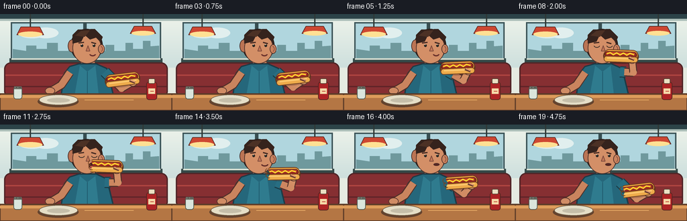
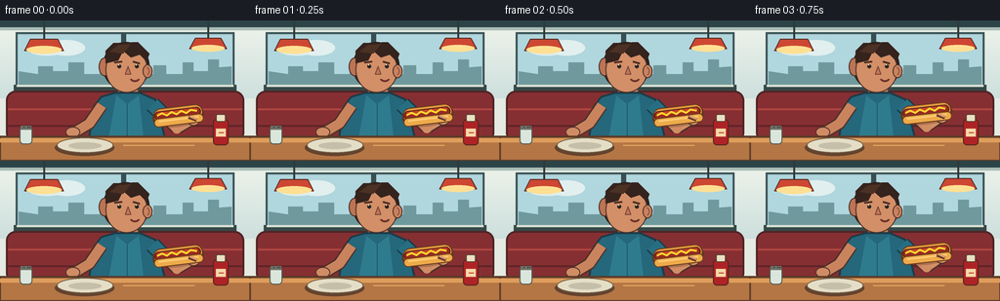
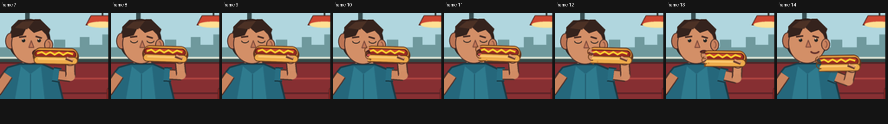

CODING AGENTS AS PIXEL WORLD MODELS
traex/GPT-5.6-Sol · motion_rationality_0016
点击播放 · 原生 RGB 像素
逐轮保存的候选
回放视频、检查图与代码变化。
每份候选均可单独播放。实际图片检查记录在下方工具轨迹中。
候选 01播放与检查图
点击播放 · 原生 RGB 像素


展开代码变化
--- 上一保存版本
+++ 本次保存版本
@@ -0,0 +1,205 @@
+from pathlib import Path
+import math
+import numpy as np
+from PIL import Image, ImageDraw
+import artifact_io
+
+W, H, N = 256, 144, 20
+S = 4
+CASE = Path(__file__).resolve().parent
+
+def sc(v): return int(round(v*S))
+def box(b): return tuple(sc(x) for x in b)
+def pts(p): return [(sc(x),sc(y)) for x,y in p]
+def smooth(x):
+ x=max(0.0,min(1.0,x)); return x*x*(3-2*x)
+def lerp(a,b,t): return a+(b-a)*t
+def mixp(a,b,t): return (lerp(a[0],b[0],t),lerp(a[1],b[1],t))
+
+def ellipse(d,b,fill,outline=None,width=1): d.ellipse(box(b),fill=fill,outline=outline,width=sc(width) if outline else 1)
+def rect(d,b,fill,outline=None,width=1): d.rectangle(box(b),fill=fill,outline=outline,width=sc(width) if outline else 1)
+def roundrect(d,b,r,fill,outline=None,width=1): d.rounded_rectangle(box(b),radius=sc(r),fill=fill,outline=outline,width=sc(width) if outline else 1)
+def poly(d,p,fill,outline=None,width=1):
+ d.polygon(pts(p),fill=fill)
+ if outline: d.line(pts(p+[p[0]]),fill=outline,width=sc(width),joint='curve')
+def line(d,p,fill,width,joint='curve'): d.line(pts(p),fill=fill,width=sc(width),joint=joint)
+def arc(d,b,start,end,fill,width): d.arc(box(b),start,end,fill=fill,width=sc(width))
+
+def gradient(im, y0,y1,c0,c1):
+ arr=np.asarray(im).copy()
+ yy0=sc(y0); yy1=sc(y1)
+ for y in range(max(0,yy0),min(H*S,yy1)):
+ t=(y-yy0)/max(1,yy1-yy0)
+ arr[y,:,:]=[int(c0[k]*(1-t)+c1[k]*t) for k in range(3)]
+ return Image.fromarray(arr)
+
+def draw_hotdog(base, center, angle, bitten=False):
+ # Transparent, high-resolution food sprite. Left end is the eating end.
+ sw,sh=58*S,30*S
+ sp=Image.new('RGBA',(sw,sh),(0,0,0,0)); d=ImageDraw.Draw(sp)
+ # Drop shadow and golden split bun.
+ d.ellipse((sc(4),sc(11),sc(53),sc(26)),fill=(70,39,25,70))
+ d.rounded_rectangle((sc(2),sc(6),sc(55),sc(24)),radius=sc(9),fill=(96,54,30,255))
+ d.rounded_rectangle((sc(3),sc(5),sc(54),sc(21)),radius=sc(8),fill=(225,151,60,255),outline=(103,57,30,255),width=sc(1))
+ # sausage nestled in the bun
+ d.rounded_rectangle((sc(4),sc(8),sc(52),sc(17)),radius=sc(5),fill=(151,42,32,255),outline=(91,31,25,255),width=sc(1))
+ d.rounded_rectangle((sc(7),sc(9),sc(49),sc(12)),radius=sc(2),fill=(202,71,43,255))
+ # lower bun lip gives unmistakable hot-dog silhouette
+ d.rounded_rectangle((sc(3),sc(15),sc(54),sc(24)),radius=sc(5),fill=(238,171,75,255),outline=(113,65,31,255),width=sc(1))
+ d.line([(sc(8),sc(18)),(sc(49),sc(18))],fill=(251,201,112,255),width=sc(2))
+ # mustard zigzag
+ mustard=[(7,12),(12,10),(17,13),(22,10),(27,13),(32,10),(37,13),(42,10),(48,12)]
+ d.line([(sc(x),sc(y)) for x,y in mustard],fill=(255,213,47,255),width=sc(2),joint='curve')
+ if bitten:
+ # transparent scalloped bite from left end, with dark inner crumb edge
+ mask=Image.new('L',(sw,sh),0); md=ImageDraw.Draw(mask)
+ for cx,cy,r in [(2,8,5),(4,14,5),(2,20,5)]: md.ellipse((sc(cx-r),sc(cy-r),sc(cx+r),sc(cy+r)),fill=255)
+ arr=np.array(sp); m=np.array(mask)>0; arr[m,3]=0; sp=Image.fromarray(arr)
+ dd=ImageDraw.Draw(sp)
+ dd.arc((sc(2),sc(6),sc(11),sc(15)),70,250,fill=(111,65,32,255),width=sc(1))
+ dd.arc((sc(3),sc(12),sc(12),sc(21)),70,250,fill=(111,65,32,255),width=sc(1))
+ rot=sp.rotate(-angle,resample=Image.Resampling.BICUBIC,expand=True)
+ x=sc(center[0])-rot.width//2; y=sc(center[1])-rot.height//2
+ base.alpha_composite(rot,(x,y))
+
+def draw_frame(i):
+ im=Image.new('RGB',(W*S,H*S),(229,235,226))
+ im=gradient(im,0,80,(239,244,235),(205,223,221))
+ d=ImageDraw.Draw(im)
+ # Diner window and frame
+ rect(d,(0,0,256,7),(44,67,72))
+ rect(d,(0,7,256,10),(171,190,184))
+ rect(d,(16,12,240,69),(171,204,210),outline=(57,82,86),width=2)
+ # soft sky panels
+ rect(d,(19,15,237,66),(176,214,222))
+ # distant clouds and skyline
+ ellipse(d,(29,24,67,36),(222,237,236)); ellipse(d,(49,20,87,36),(225,239,238))
+ poly(d,[(19,52),(19,66),(237,66),(237,47),(224,48),(224,40),(213,40),(213,52),(198,52),(198,43),(187,43),(187,55),(170,55),(170,46),(157,46),(157,55),(143,55),(143,42),(130,42),(130,52),(116,52),(116,46),(102,46),(102,55),(86,55),(86,43),(70,43),(70,52),(54,52),(54,47),(39,47),(39,55)],(111,153,157))
+ # window mullions and sill
+ rect(d,(124,12,129,69),(55,78,81)); rect(d,(14,66,242,72),(53,73,72)); rect(d,(17,66,239,68),(218,225,212))
+ # hanging diner lamps
+ line(d,[(45,0),(45,19)],(48,57,55),2); poly(d,[(31,19),(59,19),(65,31),(25,31)],(205,71,50),outline=(91,43,36),width=1)
+ ellipse(d,(27,26,63,34),(255,224,147))
+ line(d,[(213,0),(213,18)],(48,57,55),2); poly(d,[(200,18),(226,18),(232,29),(194,29)],(205,71,50),outline=(91,43,36),width=1)
+ ellipse(d,(196,25,230,32),(255,224,147))
+ # booth back
+ roundrect(d,(6,72,250,125),10,(134,47,50),outline=(81,37,39),width=2)
+ line(d,[(8,91),(248,91)],(176,69,65),2)
+ line(d,[(8,108),(248,108)],(96,36,40),2)
+ # torso / collar and rear shoulder
+ # subtle body bob from chewing/bite
+ bite = i >= 10
+ chew = (i>=10)
+ bob = (0.6*math.sin((i-9)*math.pi*0.75) if chew else 0.0)
+ # neck
+ roundrect(d,(120,66+bob,142,85+bob),7,(195,126,91),outline=(82,54,45),width=1)
+ # shirt torso
+ poly(d,[(104,78),(118,74+bob),(143,74+bob),(159,81),(169,122),(91,122),(96,88)],(37,103,123),outline=(28,59,70),width=2)
+ # cloth highlights / apron-like center
+ poly(d,[(119,77),(130,86),(142,77),(147,122),(111,122)],(47,123,142))
+ line(d,[(130,86),(130,120)],(30,88,106),1)
+ # left (resting) arm on table behind everything
+ line(d,[(104,87),(91,106),(76,115)],(80,48,41),13)
+ line(d,[(104,87),(91,106),(76,115)],(201,132,94),10)
+ ellipse(d,(67,109,82,120),(208,140,101),outline=(82,50,42),width=1)
+ # head hair mass behind face
+ ellipse(d,(105,22+bob,153,72+bob),(51,34,29),outline=(35,28,25),width=1)
+ ellipse(d,(101,38+bob,113,57+bob),(187,116,84),outline=(72,46,40),width=1)
+ # face
+ ellipse(d,(108,27+bob,151,74+bob),(211,143,103),outline=(76,48,41),width=1)
+ # ear
+ ellipse(d,(146,45+bob,156,59+bob),(201,130,94),outline=(76,48,41),width=1)
+ arc(d,(148,48+bob,153,56+bob),265,85,(133,77,62),1)
+ # hair cap and forelock
+ poly(d,[(108,44+bob),(108,31+bob),(116,23+bob),(141,22+bob),(153,34+bob),(150,42+bob),(143,35+bob),(134,38+bob),(126,31+bob),(121,41+bob)],(53,35,29))
+ poly(d,[(112,32+bob),(121,25+bob),(134,24+bob),(126,34+bob)],(76,49,37))
+ # eyebrows and eyes react to bite
+ eye_y=47+bob
+ line(d,[(117,43+bob),(125,42+bob)],(70,43,35),2)
+ line(d,[(136,42+bob),(143,44+bob)],(70,43,35),2)
+ if 8 <= i <= 12:
+ arc(d,(117,44+bob,126,50+bob),5,175,(45,39,35),1)
+ arc(d,(136,44+bob,145,50+bob),5,175,(45,39,35),1)
+ else:
+ ellipse(d,(120,45+bob,124,49+bob),(40,38,34)); ellipse(d,(138,45+bob,142,49+bob),(40,38,34))
+ ellipse(d,(121,45+bob,122,46+bob),(245,245,226)); ellipse(d,(139,45+bob,140,46+bob),(245,245,226))
+ # nose
+ poly(d,[(131,47+bob),(128,55+bob),(134,55+bob)],(193,119,87),outline=(120,70,57),width=1)
+ # mouth: open for approach/bite, chewing smile after
+ if 6 <= i <= 11:
+ ellipse(d,(132,57+bob,145,66+bob),(75,30,29),outline=(68,37,34),width=1)
+ ellipse(d,(134,62+bob,143,65+bob),(205,83,79))
+ elif i >= 12:
+ # alternating chewing compression
+ ch=math.sin((i-11)*math.pi*0.72)
+ if ch>0:
+ arc(d,(133,56+bob,144,63+bob),5,170,(100,48,43),2)
+ else:
+ ellipse(d,(134,58+bob,143,62+bob),(88,38,36),outline=(75,40,37),width=1)
+ else:
+ arc(d,(133,56+bob,143,63+bob),10,170,(109,51,45),2)
+ # shirt right sleeve, then articulated eating arm
+ shoulder=(156,86)
+ if i<=2: p=0
+ elif i<=8: p=smooth((i-2)/6)
+ elif i<=11: p=1
+ else: p=1-smooth((i-11)/8)
+ # slight anticipatory movement and small hold tremor
+ if i<=2: p += 0.018*math.sin(i*1.4)
+ high_food=(158,63+bob); low_food=(183,98)
+ food=mixp(low_food,high_food,p)
+ elbow=mixp((181,111),(176,87+bob),p)
+ hand=mixp((198,101),(174,67+bob),p)
+ # sleeve
+ line(d,[shoulder, mixp(shoulder,elbow,.42)],(25,59,70),17)
+ line(d,[shoulder, mixp(shoulder,elbow,.42)],(40,110,130),14)
+ # upper arm exposed after sleeve and forearm with dark outline
+ sleeve_end=mixp(shoulder,elbow,.32)
+ line(d,[sleeve_end,elbow],(79,49,42),13)
+ line(d,[sleeve_end,elbow],(204,134,96),10)
+ line(d,[elbow,hand],(79,49,42),12)
+ line(d,[elbow,hand],(211,143,102),9)
+ ellipse(d,(elbow[0]-5,elbow[1]-5,elbow[0]+5,elbow[1]+5),(209,140,100))
+ # fingers behind food
+ ellipse(d,(hand[0]-7,hand[1]-6,hand[0]+7,hand[1]+7),(79,48,41))
+ ellipse(d,(hand[0]-6,hand[1]-5,hand[0]+6,hand[1]+6),(215,148,105))
+ # food angle follows lift; bite appears immediately after mouth hold
+ angle=lerp(-7,2,p)
+ # Composite food onto current RGB image through RGBA conversion.
+ rgba=im.convert('RGBA')
+ draw_hotdog(rgba,food,angle,bite)
+ im=rgba.convert('RGB'); d=ImageDraw.Draw(im)
+ # foreground gripping fingers on top of bun
+ fx,fy=hand
+ line(d,[(fx-5,fy-2),(fx+3,fy+1)],(105,61,47),4)
+ line(d,[(fx-4,fy-3),(fx+3,fy)],(225,156,111),2)
+ # a couple of crumbs fall only after the bite, spatially near mouth/food
+ if 10 <= i <= 13:
+ fall=(i-10)*2.2
+ ellipse(d,(137+fall*.25,68+fall,139+fall*.25,70+fall),(236,174,75),outline=(127,78,37),width=1)
+ if i>=11: ellipse(d,(143,67+fall*.8,145,69+fall*.8),(223,146,58))
+ # table in foreground, occluding lower body/arms naturally
+ poly(d,[(0,119),(256,119),(256,144),(0,144)],(180,118,68),outline=(91,59,39),width=2)
+ rect(d,(0,121,256,125),(222,157,91))
+ # plate with napkin and tiny remaining condiments
+ ellipse(d,(56,122,117,139),(100,67,46))
+ ellipse(d,(58,120,116,136),(229,222,199),outline=(110,92,70),width=1)
+ ellipse(d,(70,125,104,132),(197,190,169))
+ # ketchup bottle to establish meal setting
+ roundrect(d,(218,101,234,128),4,(174,35,37),outline=(83,37,32),width=1)
+ roundrect(d,(221,96,231,104),2,(235,224,195),outline=(90,67,51),width=1)
+ rect(d,(221,111,231,119),(245,218,169)); line(d,[(224,115),(229,115)],(190,52,43),1)
+ # salt shaker
+ roundrect(d,(20,108,33,127),4,(218,229,220),outline=(79,87,79),width=1)
+ rect(d,(21,108,32,112),(109,113,103));
+ for x in [24,28,30]: ellipse(d,(x,109,x+1,110),(46,51,49))
+ # warm lighting sheen on table
+ line(d,[(126,128),(199,128)],(234,174,104),1)
+ # downsample antialiased
+ im=im.resize((W,H),Image.Resampling.LANCZOS)
+ return np.asarray(im,dtype=np.uint8)
+
+frames=np.stack([draw_frame(i) for i in range(N)])
+assert frames.shape==(20,144,256,3) and frames.dtype==np.uint8
+artifact_io.save(frames,CASE)
+print('saved',frames.shape,frames.dtype)
可观测工具轨迹
实际执行的命令与返回图片。
命令 1exit 0
/bin/bash -lc "cat prompt.txt && printf '\\n--- GENERATION_RULES ---\\n' && cat GENERATION_RULES.md"
命令 2exit 0
/bin/bash -lc "cat task_spec.json && printf '\\n--- FILES ---\\n' && find . -maxdepth 2 -type f -printf '%p\\n' | sort"
命令 3exit 0
/bin/bash -lc "command -v ffmpeg; command -v python3; python3 - <<'PY' mods=['cv2','PIL','numpy','imageio','moviepy','cairo'] for m in mods: try: x=__import__(m); print(m,'OK',getattr(x,'__version__','')) except Exception as e: print(m,'NO',e) PY"
命令 4exit 0
/bin/bash -lc 'cat artifact_io.py'
命令 5exit 2
/bin/bash -lc "cat > generate.py <<'PY'
from pathlib import Path
import math
import numpy as np
from PIL import Image, ImageDraw
import artifact_io
W, H, N = 256, 144, 20
S = 4
CASE = Path(__file__).resolve().parent
def sc(v): return int(round(v*S))
def box(b): return tuple(sc(x) for x in b)
def pts(p): return [(sc(x),sc(y)) for x,y in p]
def smooth(x):
x=max(0.0,min(1.0,x)); return x*x*(3-2*x)
def lerp(a,b,t): return a+(b-a)*t
def mixp(a,b,t): return (lerp(a[0],b[0],t),lerp(a[1],b[1],t))
def ellipse(d,b,fill,outline=None,width=1): d.ellipse(box(b),fill=fill,outline=outline,width=sc(width) if outline else 1)
def rect(d,b,fill,outline=None,width=1): d.rectangle(box(b),fill=fill,outline=outline,width=sc(width) if outline else 1)
def roundrect(d,b,r,fill,outline=None,width=1): d.rounded_rectangle(box(b),radius=sc(r),fill=fill,outline=outline,width=sc(width) if outline else 1)
def poly(d,p,fill,outline=None,width=1):
d.polygon(pts(p),fill=fill)
if outline: d.line(pts(p+[p[0]]),fill=outline,width=sc(width),joint='curve')
def line(d,p,fill,width,joint='curve'): d.line(pts(p),fill=fill,width=sc(width),joint=joint)
def arc(d,b,start,end,fill,width): d.arc(box(b),start,end,fill=fill,width=sc(width))
def gradient(im, y0,y1,c0,c1):
arr=np.asarray(im).copy()
yy0=sc(y0); yy1=sc(y1)
for y in range(max(0,yy0),min(H*S,yy1)):
t=(y-yy0)/max(1,yy1-yy0)
arr[y,:,:]=[int(c0[k]*(1-t)+c1[k]*t) for k in range(3)]
return Image.fromarray(arr)
def draw_hotdog(base, center, angle, bitten=False):
# Transparent, high-resolution food sprite. Left end is the eating end.
sw,sh=58*S,30*S
sp=Image.new('RGBA',(sw,sh),(0,0,0,0)); d=ImageDraw.Draw(sp)
# Drop shadow and golden split bun.
d.ellipse((sc(4),sc(11),sc(53),sc(26)),fill=(70,39,25,70))
d.rounded_rectangle((sc(2),sc(6),sc(55),sc(24)),radius=sc(9),fill=(96,54,30,255))
d.rounded_rectangle((sc(3),sc(5),sc(54),sc(21)),radius=sc(8),fill=(225,151,60,255),outline=(103,57,30,255),width=sc(1))
# sausage nestled in the bun
d.rounded_rectangle((sc(4),sc(8),sc(52),sc(17)),radius=sc(5),fill=(151,42,32,255),outline=(91,31,25,255),width=sc(1))
d.rounded_rectangle((sc(7),sc(9),sc(49),sc(12)),radius=sc(2),fill=(202,71,43,255))
# lower bun lip gives unmistakable hot-dog silhouette
d.rounded_rectangle((sc(3),sc(15),sc(54),sc(24)),radius=sc(5),fill=(238,171,75,255),outline=(113,65,31,255),width=sc(1))
d.line([(sc(8),sc(18)),(sc(49),sc(18))],fill=(251,201,112,255),width=sc(2))
# mustard zigzag
mustard=[(7,12),(12,10),(17,13),(22,10),(27,13),(32,10),(37,13),(42,10),(48,12)]
d.line([(sc(x),sc(y)) for x,y in mustard],fill=(255,213,47,255),width=sc(2),joint='curve')
if bitten:
# transparent scalloped bite from left end, with dark inner crumb edge
mask=Image.new('L',(sw,sh),0); md=ImageDraw.Draw(mask)
for cx,cy,r in [(2,8,5),(4,14,5),(2,20,5)]: md.ellipse((sc(cx-r),sc(cy-r),sc(cx+r),sc(cy+r)),fill=255)
arr=np.array(sp); m=np.array(mask)>0; arr[m,3]=0; sp=Image.fromarray(arr)
dd=ImageDraw.Draw(sp)
dd.arc((sc(2),sc(6),sc(11),sc(15)),70,250,fill=(111,65,32,255),width=sc(1))
dd.arc((sc(3),sc(12),sc(12),sc(21)),70,250,fill=(111,65,32,255),width=sc(1))
rot=sp.rotate(-angle,resample=Image.Resampling.BICUBIC,expand=True)
x=sc(center[0])-rot.width//2; y=sc(center[1])-rot.height//2
base.alpha_composite(rot,(x,y))
def draw_frame(i):
im=Image.new('RGB',(W*S,H*S),(229,235,226))
im=gradient(im,0,80,(239,244,235),(205,223,221))
d=ImageDraw.Draw(im)
# Diner window and frame
rect(d,(0,0,256,7),(44,67,72))
rect(d,(0,7,256,10),(171,190,184))
rect(d,(16,12,240,69),(171,204,210),outline=(57,82,86),width=2)
# soft sky panels
rect(d,(19,15,237,66),(176,214,222))
# distant clouds and skyline
ellipse(d,(29,24,67,36),(222,237,236)); ellipse(d,(49,20,87,36),(225,239,238))
poly(d,[(19,52),(19,66),(237,66),(237,47),(224,48),(224,40),(213,40),(213,52),(198,52),(198,43),(187,43),(187,55),(170,55),(170,46),(157,46),(157,55),(143,55),(143,42),(130,42),(130,52),(116,52),(116,46),(102,46),(102,55),(86,55),(86,43),(70,43),(70,52),(54,52),(54,47),(39,47),(39,55)],(111,153,157))
# window mullions and sill
rect(d,(124,12,129,69),(55,78,81)); rect(d,(14,66,242,72),(53,73,72)); rect(d,(17,66,239,68),(218,225,212))
# hanging diner lamps
line(d,[(45,0),(45,19)],(48,57,55),2); poly(d,[(31,19),(59,19),(65,31),(25,31)],(205,71,50),outline=(91,43,36),width=1)
ellipse(d,(27,26,63,34),(255,224,147))
line(d,[(213,0),(213,18)],(48,57,55),2); poly(d,[(200,18),(226,18),(232,29),(194,29)],(205,71,50),outline=(91,43,36),width=1)
ellipse(d,(196,25,230,32),(255,224,147))
# booth back
roundrect(d,(6,72,250,125),10,(134,47,50),outline=(81,37,39),width=2)
line(d,[(8,91),(248,91)],(176,69,65),2)
line(d,[(8,108),(248,108)],(96,36,40),2)
# torso / collar and rear shoulder
# subtle body bob from chewing/bite
bite = i >= 10
chew = (i>=10)
bob = (0.6*math.sin((i-9)*math.pi*0.75) if chew else 0.0)
# neck
roundrect(d,(120,66+bob,142,85+bob),7,(195,126,91),outline=(82,54,45),width=1)
# shirt torso
poly(d,[(104,78),(118,74+bob),(143,74+bob),(159,81),(169,122),(91,122),(96,88)],(37,103,123),outline=(28,59,70),width=2)
# cloth highlights / apron-like center
poly(d,[(119,77),(130,86),(142,77),(147,122),(111,122)],(47,123,142))
line(d,[(130,86),(130,120)],(30,88,106),1)
# left (resting) arm on table behind everything
line(d,[(104,87),(91,106),(76,115)],(80,48,41),13)
line(d,[(104,87),(91,106),(76,115)],(201,132,94),10)
ellipse(d,(67,109,82,120),(208,140,101),outline=(82,50,42),width=1)
# head hair mass behind face
ellipse(d,(105,22+bob,153,72+bob),(51,34,29),outline=(35,28,25),width=1)
ellipse(d,(101,38+bob,113,57+bob),(187,116,84),outline=(72,46,40),width=1)
# face
ellipse(d,(108,27+bob,151,74+bob),(211,143,103),outline=(76,48,41),width=1)
# ear
ellipse(d,(146,45+bob,156,59+bob),(201,130,94),outline=(76,48,41),width=1)
arc(d,(148,48+bob,153,56+bob),265,85,(133,77,62),1)
# hair cap and forelock
poly(d,[(108,44+bob),(108,31+bob),(116,23+bob),(141,22+bob),(153,34+bob),(150,42+bob),(143,35+bob),(134,38+bob),(126,31+bob),(121,41+bob)],(53,35,29))
poly(d,[(112,32+bob),(121,25+bob),(134,24+bob),(126,34+bob)],(76,49,37))
# eyebrows and eyes react to bite
eye_y=47+bob
line(d,[(117,43+bob),(125,42+bob)],(70,43,35),2)
line(d,[(136,42+bob),(143,44+bob)],(70,43,35),2)
if 8 <= i <= 12:
arc(d,(117,44+bob,126,50+bob),5,175,(45,39,35),1)
arc(d,(136,44+bob,145,50+bob),5,175,(45,39,35),1)
else:
ellipse(d,(120,45+bob,124,49+bob),(40,38,34)); ellipse(d,(138,45+bob,142,49+bob),(40,38,34))
ellipse(d,(121,45+bob,122,46+bob),(245,245,226)); ellipse(d,(139,45+bob,140,46+bob),(245,245,226))
# nose
poly(d,[(131,47+bob),(128,55+bob),(134,55+bob)],(193,119,87),outline=(120,70,57),width=1)
# mouth: open for approach/bite, chewing smile after
if 6 <= i <= 11:
ellipse(d,(132,57+bob,145,66+bob),(75,30,29),outline=(68,37,34),width=1)
ellipse(d,(134,62+bob,143,65+bob),(205,83,79))
elif i >= 12:
# alternating chewing compression
ch=math.sin((i-11)*math.pi*0.72)
if ch>0:
arc(d,(133,56+bob,144,63+bob),5,170,(100,48,43),2)
else:
ellipse(d,(134,58+bob,143,62+bob),(88,38,36),outline=(75,40,37),width=1)
else:
arc(d,(133,56+bob,143,63+bob),10,170,(109,51,45),2)
# shirt right sleeve, then articulated eating arm
shoulder=(156,86)
if i<=2: p=0
elif i<=8: p=smooth((i-2)/6)
elif i<=11: p=1
else: p=1-smooth((i-11)/8)
# slight anticipatory movement and small hold tremor
if i<=2: p += 0.018*math.sin(i*1.4)
high_food=(158,63+bob); low_food=(183,98)
food=mixp(low_food,high_food,p)
elbow=mixp((181,111),(176,87+bob),p)
hand=mixp((198,101),(174,67+bob),p)
# sleeve
line(d,[shoulder, mixp(shoulder,elbow,.42)],(25,59,70),17)
line(d,[shoulder, mixp(shoulder,elbow,.42)],(40,110,130),14)
# upper arm exposed after sleeve and forearm with dark outline
sleeve_end=mixp(shoulder,elbow,.32)
line(d,[sleeve_end,elbow],(79,49,42),13)
line(d,[sleeve_end,elbow],(204,134,96),10)
line(d,[elbow,hand],(79,49,42),12)
line(d,[elbow,hand],(211,143,102),9)
ellipse(d,(elbow[0]-5,elbow[1]-5,elbow[0]+5,elbow[1]+5),(209,140,100))
# fingers behind food
ellipse(d,(hand[0]-7,hand[1]-6,hand[0]+7,hand[1]+7),(79,48,41))
ellipse(d,(hand[0]-6,hand[1]-5,hand[0]+6,hand[1]+6),(215,148,105))
# food angle follows lift; bite appears immediately after mouth hold
angle=lerp(-7,2,p)
draw_hotdog(im.convert('RGBA'), food, angle, bitten) # no-op target; composite below correctly
# Composite food onto current RGB image through RGBA conversion.
rgba=im.convert('RGBA')
draw_hotdog(rgba,food,angle,bitten)
im=rgba.convert('RGB'); d=ImageDraw.Draw(im)
# foreground gripping fingers on top of bun
fx,fy=hand
line(d,[(fx-5,fy-2),(fx+3,fy+1)],(105,61,47),4)
line(d,[(fx-4,fy-3),(fx+3,fy)],(225,156,111),2)
# a couple of crumbs fall only after the bite, spatially near mouth/food
if 10 <= i <= 13:
fall=(i-10)*2.2
ellipse(d,(137+fall*.25,68+fall,139+fall*.25,70+fall),(236,174,75),outline=(127,78,37),width=1)
if i>=11: ellipse(d,(143,67+fall*.8,145,69+fall*.8),(223,146,58))
# table in foreground, occluding lower body/arms naturally
poly(d,[(0,119),(256,119),(256,144),(0,144)],(180,118,68),outline=(91,59,39),width=2)
rect(d,(0,121,256,125),(222,157,91))
# plate with napkin and tiny remaining condiments
ellipse(d,(56,122,117,139),(100,67,46))
ellipse(d,(58,120,116,136),(229,222,199),outline=(110,92,70),width=1)
ellipse(d,(70,125,104,132),(197,190,169))
# ketchup bottle to establish meal setting
roundrect(d,(218,101,234,128),4,(174,35,37),outline=(83,37,32),width=1)
roundrect(d,(221,96,231,104),2,(235,224,195),outline=(90,67,51),width=1)
rect(d,(221,111,231,119),(245,218,169)); line(d,[(224,115),(229,115)],(190,52,43),1)
# salt shaker
roundrect(d,(20,108,33,127),4,(218,229,220),outline=(79,87,79),width=1)
rect(d,(21,108,32,112),(109,113,103));
for x in [24,28,30]: ellipse(d,(x,109,x+1,110),(46,51,49))
# warm lighting sheen on table
line(d,[(126,128),(199,128)],(234,174,104),1)
# downsample antialiased
im=im.resize((W,H),Image.Resampling.LANCZOS)
return np.asarray(im,dtype=np.uint8)
frames=np.stack([draw_frame(i) for i in range(N)])
assert frames.shape==(20,144,256,3) and frames.dtype==np.uint8
artifact_io.save(frames,CASE)
print('saved',frames.shape,frames.dtype)
PY
python3 generate.py
ls -lh pixels.npz inspection.png index.html frames/00.png frames/19.png"命令 6exit 0
/bin/bash -lc 'python3 generate.py && ls -lh pixels.npz inspection.png transition_check.png index.html frames/00.png frames/19.png'
命令 7exit 0
/bin/bash -lc "python3 - <<'PY'
from PIL import Image,ImageDraw
inds=range(7,15)
out=Image.new('RGB',(8*256,288),(20,20,20))
d=ImageDraw.Draw(out)
for j,i in enumerate(inds):
im=Image.open(f'frames/{i:02d}.png')
crop=im.crop((95,15,220,115)).resize((250,200))
out.paste(crop,(j*256,30))
d.text((j*256+3,5),f'frame {i}',fill='white')
out.save('.tmp/bite_check.png')
PY"命令 8exit 0
/bin/bash -lc 'python3 -m py_compile generate.py && grep -n "artifact_io.save" generate.py'
命令 9exit 0
/bin/bash -lc "python3 - <<'PY'
import json, numpy as np
from PIL import Image
s=json.load(open('task_spec.json'))
z=np.load('pixels.npz')['pixels']
assert z.shape==(s['height'],s['width'],s['frames'])
assert len(list(__import__('pathlib').Path('frames').glob('*.png')))==s['frames']
for i in range(s['frames']):
im=Image.open(f'frames/{i:02d}.png')
assert im.mode=='RGB' and im.size==(s['width'],s['height'])
# report adjacent pixel-change continuity, and food-motion proxy via frame differences
fs=np.stack([np.asarray(Image.open(f'frames/{i:02d}.png')) for i in range(s['frames'])])
d=np.abs(fs[1:].astype(int)-fs[:-1].astype(int)).mean((1,2,3))
print('validated RGB frames:',fs.shape,fs.dtype)
print('adjacent mean deltas:',np.round(d,2).tolist())
print('duration:',s['frames']/s['fps'],'seconds')
PY"视觉工具实际返回图片 1

视觉工具实际返回图片 2

保存候选 1 份；完成命令 9 次；可验证图片返回 2 张。原始 API 响应与完整日志保留在本地。